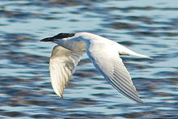
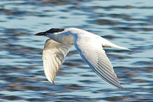

| Gull-billed Tern | |
|---|---|
|  | |
| Conservation status | |
| Binomial name | |
| Gelochelidon nilotica (Gmelin, 1789) |
| Gull-billed Tern | |
|---|---|
|  | |
| Conservation status | |
| Binomial name | |
| Gelochelidon nilotica (Gmelin, 1789) |
The Gull-billed Tern, Gelochelidon nilotica, formerly Sterna nilotica (Bridge et al., 2005), is a seabird of the tern family Sternidae. It is now considered to be in its own genus.
It breeds in warmer parts of the world in southern Europe (and a very small isolated population in northern Germany and Denmark), temperate and eastern Asia, both coasts of North America, eastern South America and Australia. This bird has a number of geographical races, differing mainly in size and minor plumage details.
All forms show a post-breeding dispersal, but the northern breeders are most migratory, wintering south to Africa, the Caribbean and northern South America, southern Asia and New Zealand.
This species breeds in colonies on lakes, marshes and coasts. It nests in a ground scrape and lays two to five eggs.
This is a somewhat atypical tern, in appearance like a Sterna tern, but with feeding habits more like the Chlidonias marsh terns, Black Tern and White-winged Tern. It used to be grouped in the genus Sterna but is now placed on its own in the genus Gelochelidon.
The Gull-billed Tern does not normally plunge dive for fish like the other white terns, but feeds on insects taken in flight, and also often hunts over wet fields, to take amphibians and small mammals, as well as small birds.
This is a fairly large and powerful tern, similar in size and general appearance to a Sandwich Tern, but the short thick gull-like bill, broad wings, long legs and robust body are distinctive. The summer adult has grey upperparts, white underparts, a black cap, strong black bill and black legs. The call is a characteristic ker-wik.
In winter, the cap is lost, and there is a dark patch through the eye like a Forster's Tern or a Mediterranean Gull. Juvenile Gull-billed Terns have a fainter mask, but otherwise look much like winter adults.
Juvenile Sandwich Terns have a short bill, and are frequently mistaken for Gull-billed Tern where the latter species is uncommon, such as North Sea coasts.
The Gull-billed Tern is one of the species to which the Agreement on the Conservation of African-Eurasian Migratory Waterbirds (AEWA) applies.

{kind=link}
{kind=link}
{kind=link}